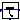
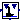
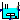
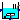
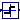

Package of components of the systems used for demonstration purposes
This package contains auxiliary models designed to build up test models for controllers.
Extends from Modelica.Icons.Package (Icon for standard packages).
| Name | Description |
|---|---|
| AccelerationLimiter | Output follows input with limited acceleration and optionally limited velocity |
| DoublePendulum | crane trolley system |
|  DoublePendulum2 | Crane trolley system |
| InverseDoublePendulum | Inverse double pendulum |
| InverseDoublePendulum2 | Inverted double pendulum |
|  InverseDoublePendulum3 | Inverted double pendulum |
|  MixingUnit | Stirred tank reactor as controller plant with standard interfaces |
|  MixingUnit1 | Stirred tank reactor |
| SeriesConnection | Series connection of two PT1 blocks |
|  TwoPoint | Block with two-point behaviour |
Output follows input with limited acceleration and optionally limited velocity
Extends from Interfaces.PartialSampledBlock (Partial block of Sampled library (icon + default parameters)).
| Name | Description |
|---|---|
| velocityLimitation | True, if velocity to be limited |
| v_limit | Maximum absolute velocity |
| a_limit | Maximum absolute acceleration |
| Advanced options | |
| blockType | Type of block |
| initType | Type of initialization (no init/steady state/initial state/initial output) |
| Discrete block parameters | |
| methodType | Type of discretization if discrete block |
| sampleFactor | Sample factor (Ts = sampleFactor * sampleClock.sampleTime) |
| Integrator1 | |
| y1_start | Start value of integrator1 |
| withDelay1 | Delays the input of integrator1 |
| Integrator2 | |
| y2_start | Start value of integrator2 |
| withDelay2 | Delays the input of integrator2 |
| Name | Description |
|---|---|
| u | |
| s | |
| v | |
| a |
crane trolley system
| Name | Description |
|---|---|
| m_trolley | [kg] |
| m_load | [kg] |
| length | [m] |
| phi1_start | [rad] |
| phi2_start | [rad] |
| w1_start | [rad/s] |
| w2_start | [rad/s] |
| Name | Description |
|---|---|
| u | |
| s | |
| v | |
| phi | |
| w | |
| phi1 | |
| w1 |
Crane trolley system
Model of a simple double pendulum system using double pendulum multibody model.
The physical Model is used in Modelica_LinearSystems2.Examples.StateSpace.doublePendulumController where it is being linearized an used as a base for linear controller design. The results are used to control the crane system as shown in double pendulum example.
Extends from Modelica_LinearSystems2.Controller.Templates.Internal.PlantTemplate (MIMO plant template).
| Name | Description |
|---|---|
| n | System order |
| m | Number of inputs |
| additionalMeasurableOutputs | Enable additional output vector of dimension l |
| l | Number of measurable outputs |
| m_trolley | Mass of trolley [kg] |
| m_load | Mass of load on 2nd arm [kg] |
| length | Total length of double pendulum (i.e. length of each arm = length/2) [m] |
| phi1_start | Initial rotation angle of 1st arm relative to trolley [rad] |
| phi2_start | Initial rotation angle of 2nd arm relative to 1st arm [rad] |
| w1_start | Initial angular velocity of 1st arm [rad/s] |
| w2_start | Initial angular velocity of 2nd arm [rad/s] |
| Name | Description |
|---|---|
| y[n] | |
| u[m] | |
| ym[l] |
Inverse double pendulum
Model of a simple inverted double pendulum system. The mdel is the same as in Modelica_Controller.Examples.Components.DoublePendulum but with different initial values because the initial values are used as a working point for linearization.
The physical Model is used in Modelica_LinearSystems2.Examples.StateSpace.inverseDoublePendulumController where it is being
linearized an used as a base for linear controller design. The results are used to control the crane system
in Modelica_Controller.Examples.InverseDoublePendulum.mo
| Name | Description |
|---|---|
| m_trolley | Mass of trolley [kg] |
| m_load | Mass of load on 2nd arm [kg] |
| length | Total length of double pendulum (i.e. length of each arm = length/2) [m] |
| phi1_start | Initial rotation angle of 1st arm relative to trolley [rad] |
| phi2_start | Initial rotation angle of 2nd arm relative to 1st arm [rad] |
| w1_start | Initial angular velocity of 1st arm relative to trolley [rad/s] |
| w2_start | Initial angular velocity of 2nd arm relative to 1st arm [rad/s] |
| s_start | Initial position of trolley relative to world [m] |
| v_start | Initial velocity of trolley relative to world [m/s] |
| cartDisturbance | True, if cart disturbance should be enabled |
| bodyDisturbance | True, if body disturbance should be enabled |
| Name | Description |
|---|---|
| u | |
| s | |
| v | |
| phi | |
| w | |
| phi1 | |
| w1 | |
| dist | |
| dist2 |
Inverted double pendulum
Model of a simple inverted double pendulum system using Modelica_Controller.Examples.Components.InverseDoublePendulum. The physical Model is used in Modelica_LinearSystems2.Examples.StateSpace.inverseDoublePendulumController where it is being linearized an used as a base for linear controller design. The results are used to control the crane system in Modelica_Controller.Examples.InverseDoublePendulum.mo
Extends from Modelica_LinearSystems2.Controller.Templates.Internal.PlantTemplate (MIMO plant template).
| Name | Description |
|---|---|
| n | System order |
| m | Number of inputs |
| additionalMeasurableOutputs | Enable additional output vector of dimension l |
| l | Number of measurable outputs |
| m_trolley | Mass of trolley [kg] |
| m_load | Mass of load on 2nd arm [kg] |
| length | Total length of double pendulum (i.e. length of each arm = length/2) [m] |
| s_start | Initial position of trolley relative to world [m] |
| v_start | Initial velocity of trolley relative to world [m/s] |
| phi1_start | Initial rotation angle of 1st arm relative to trolley [rad] |
| phi2_start | Initial rotation angle of 2nd arm relative to 1st arm [rad] |
| w1_start | Initial angular velocity of 1st arm relative to trolley [rad/s] |
| w2_start | Initial angular velocity of 2nd arm relative to 1st arm [rad/s] |
| cartDisturbance | True, if cart disturbance should be enabled |
| bodyDisturbance | True, if body disturbance should be enabled |
| Name | Description |
|---|---|
| y[n] | |
| u[m] | |
| ym[l] | |
| dist | |
| dist2 |
Inverted double pendulum
Model of a simple inverted double pendulum system using Modelica_Controller.Examples.Components.InverseDoublePendulum. The physical Model is used in Modelica_LinearSystems2.Examples.StateSpace.inverseDoublePendulumController where it is being linearized an used as a base for linear controller design. The results are used to control the crane system in Modelica_Controller.Examples.InverseDoublePendulum.mo
Extends from Modelica_LinearSystems2.Controller.Templates.Internal.PlantTemplate (MIMO plant template).
| Name | Description |
|---|---|
| n | System order |
| m | Number of inputs |
| additionalMeasurableOutputs | Enable additional output vector of dimension l |
| l | Number of measurable outputs |
| m_trolley | Mass of trolley [kg] |
| m_load | Mass of load on 2nd arm [kg] |
| length | Total length of double pendulum (i.e. length of each arm = length/2) [m] |
| s_start | Initial position of trolley relative to world [m] |
| v_start | Initial velocity of trolley relative to world [m/s] |
| phi1_start | Initial rotation angle of 1st arm relative to trolley [rad] |
| phi2_start | Initial rotation angle of 2nd arm relative to 1st arm [rad] |
| w1_start | Initial angular velocity of 1st arm relative to trolley [rad/s] |
| w2_start | Initial angular velocity of 2nd arm relative to 1st arm [rad/s] |
| cartDisturbance | True, if cart disturbance should be enabled |
| bodyDisturbance | True, if body disturbance should be enabled |
| secondAngle | Include 2nd angle of double pendulum in output ym |
| Name | Description |
|---|---|
| y[n] | |
| u[m] | |
| ym[l] | |
| dist | |
| dist2 |
Stirred tank reactor as controller plant with standard interfaces
Model of idealized stirred tank reactor, see MixingUnit1 for more details. It is intended for replacement of a plant instance in general model of controller.
Extends from Templates.Internal.PlantTemplate_SISO (SISO plant template).
| Name | Description |
|---|---|
| additionalMeasurableOutputs | Enable additional output vector of dimension l |
| l | Number of measurable outputs |
| c0 | Nominal concentration [mol/l] |
| T0 | Nominal temperature [K] |
| a1 | Matrix A: Coefficient of element [1,1] |
| a21 | Matrix A: Coefficient of element [2,1] |
| a22 | Matrix A: Coefficient of element [2,2] |
| b | Matrix B: Coefficient of element [2,1] |
| k0 | Constant k0 for gamma |
| eps | Constant eps for gamma |
| x10 | Initial value of state x1 (related concentration of substance A in tank) |
| x10_inv | Initial value of state x1 of inverted model |
| x20 | Initial value of state x2 (related temperature in tank) |
| u0 | Initial related temperature of cooling medium [-] |
| Name | Description |
|---|---|
| y | |
| u | |
| ym[l] |
Stirred tank reactor
Model of idealized stirred tank reactor from [1], p. 280. In the stirred tank there is a continuous intake of substance A which reacts with a catalyzer and brakes down into other substances. Since the content of the tank reactor is stired continuously, it can be supposed a homogenous distribution of all substances within the tank. Therefore, the tank reactor system can be described by means of concentrated parameters.
The chemical reaction in the tank reactor is exothermic, i.e. it produces themal
energy which affects the stability of the reaction.
To stabilize it, the tank reactor is cooled. The temperature T_c
of cooling medium is the variable to be actuated by controller.
The speed γ of the reaction depends on the concentration c and
temperature T as follows:
gamma = (1-x1) * k0 * e^(-eps/(1+x2))
with related concentration x1 and related temperature x2:
c0 - c T - T0
x1 = --------; x2 = --------.
c0 T0
Both variables x1 and x2 are states of the model.
Additionally, there is used related temperature u of cooling medium:
T_c - T0
u = --------.
T0
| Name | Description |
|---|---|
| c0 | Nominal concentration [mol/l] |
| T0 | Nominal temperature [K] |
| a1 | Matrix A: Coefficient of element [1,1] |
| a21 | Matrix A: Coefficient of element [2,1] |
| a22 | Matrix A: Coefficient of element [2,2] |
| b | Matrix B: Coefficient of element [2,1] |
| k0 | Constant k0 for gamma |
| eps | Constant eps for gamma |
| Name | Description |
|---|---|
| T_c | Cooling temperature [K] |
| c | Concentration in mixing unit [mol/l] |
| T | Temperature in mixing unit [K] |
Series connection of two PT1 blocks
Extends from Modelica.Blocks.Interfaces.BlockIcon (This icon will be removed in future Modelica versions, use Modelica.Blocks.Icons.Block instead.).
| Name | Description |
|---|---|
| blockType | Type of Sampled blocks (Continuous or Discrete) |
| methodType | Discretization method for discrete blocks |
| sampleTime | Base sample time for discrete blocks [s] |
| T1 | Time constant of first PT1 block [s] |
| T2 | Time constant of second PT1 block [s] |
Block with two-point behaviour
Extends from Modelica.Blocks.Interfaces.SISO (Single Input Single Output continuous control block).
| Name | Description |
|---|---|
| b | Absolute value for output (y = +-b) |
| Name | Description |
|---|---|
| u | Connector of Real input signal |
| y | Connector of Real output signal |